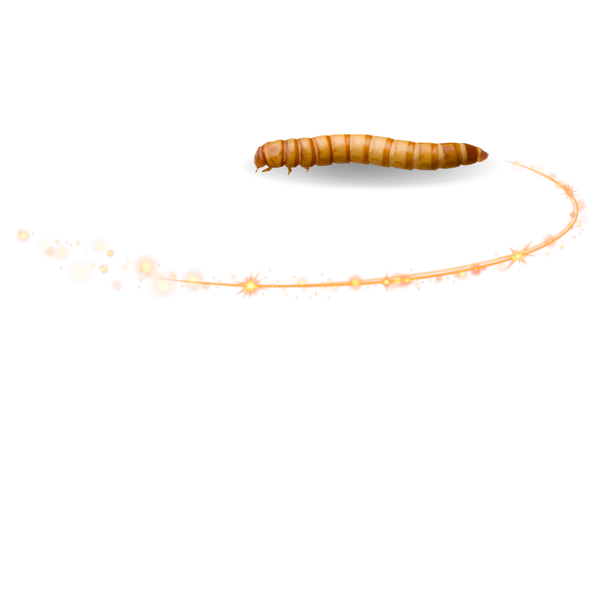

Muito obrigado por adquirir um de nossos produtos!
Caso ainda não tenha adquirido ou está apenas procurando informações adicionais, aqui você encontra um pouco mais sobre nossos tenébrios.
TENEBRIO MOLITOR
Conhecidos também como "bicho da farinha", essas larvas são ricas em proteínas e apresenta um perfil nutricional balanceado,
possuem aproximadamente de 50% de proteína em peso seco, 20% de gordura e um teor menor de fibras em comparação com o tenébrio gigante.
Eles são uma excelente opção para a alimentação de diversos animais de estimação, como pássaros, lagartos, sapos, peixes, aranhas, dentre outros.
Nossos tenébrios são criados com cuidado e higiene para oferecer saúde e qualidade de vida aos seus pets.

Aqui estão alguns dos benefícios de adquirir nossos tenébrios:
-
Fonte de proteína
essencial para o crescimento e a manutenção muscular.
-
Alto valor nutricional
ricos em minerais como cálcio e fósforo, além de fibras que auxiliam na digestão.
-
Criados com cuidado e higiene
produto 100% natural e livre de aditivos químicos.
-
Digestibilidade
Alta absorção de nutrientes pelos animais.
-
Fáceis de armazenar
Podem ser mantidos em seu pote original, desde que sejam mantidos em local fresco e seco.
-
Estimula o instinto caçador do pet
Proporciona enriquecimento ambiental por serem um alimento vivo.
-
variedade à dieta do seu pet
Promovendo uma alimentação balanceada e interessante.
 Besouros - Seu pote não deve conter besouros no momento da compra. No entanto, caso haja demora na oferta
das pupas aos seus pets, elas podem se transformar em besouros após aproximadamente 14 dias. Se o pote já contiver besouros no momento da compra, pedimos que
entre em contato conosco para resolver a situação. Porém, caso as pupas se transformem em besouros dias após a compra, não oferecemos a possibilidade de troca.
Besouros - Seu pote não deve conter besouros no momento da compra. No entanto, caso haja demora na oferta
das pupas aos seus pets, elas podem se transformar em besouros após aproximadamente 14 dias. Se o pote já contiver besouros no momento da compra, pedimos que
entre em contato conosco para resolver a situação. Porém, caso as pupas se transformem em besouros dias após a compra, não oferecemos a possibilidade de troca.